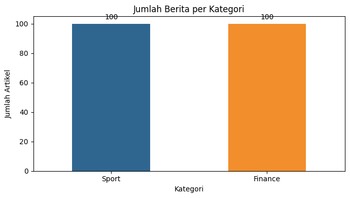
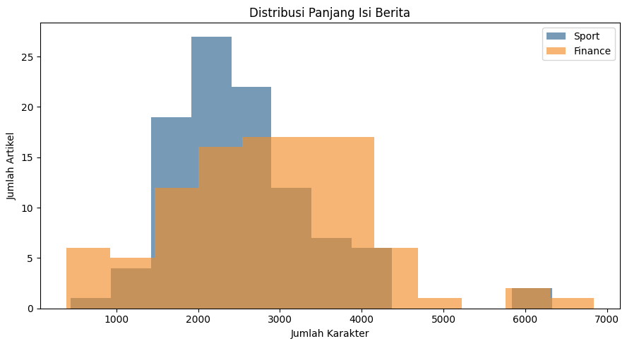
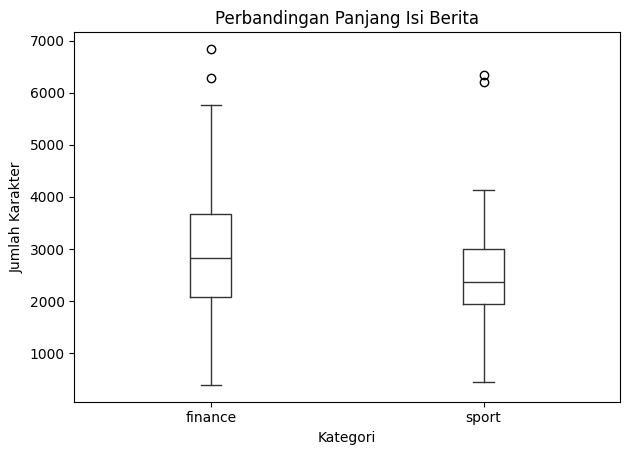
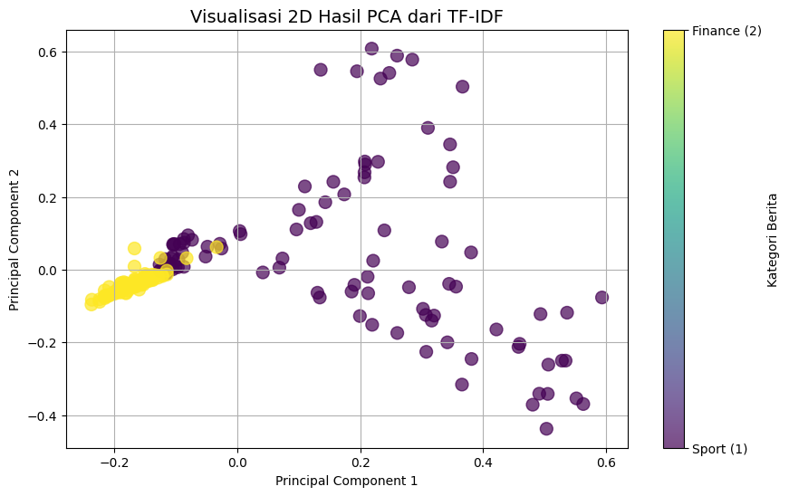

Crawling Berita Detik.com: Sport dan Finance#
Notebook ini membahas proses Web Search & Mining menggunakan pendekatan CRISP-DM (hingga tahap Data Preparation) untuk mengumpulkan dan menganalisis berita dari detik.com. Dataset yang dihasilkan digunakan untuk membandingkan karakteristik berita kategori sport dan finance.
Business Understanding#
Latar Belakang#
Berita online terus bertambah jumlah dan topiknya setiap hari. Pengelompokan berita berdasarkan kategori sangat berguna untuk:
memudahkan pencarian dan pengarsipan informasi,
menganalisis tren topik dari waktu ke waktu, dan
membangun sistem rekomendasi atau klasifikasi berita secara otomatis.
Tujuan#
Mengumpulkan dataset berita berbahasa Indonesia langsung dari situs detik.com, terdiri dari dua kategori:
Kategori |
Sumber |
Jumlah |
|---|---|---|
|
100 artikel |
|
|
100 artikel |
Setiap artikel disimpan dengan kolom id, isi_berita, label, dan url.
Pertanyaan yang Ingin Dijawab#
Apakah data berita dari kategori sport dan finance dapat dikumpulkan secara seimbang?
Seperti apa perbedaan panjang isi berita pada kedua kategori?
Kata atau topik apa yang paling sering muncul pada masing-masing kategori?
Apakah dataset sudah cukup bersih dan lengkap untuk digunakan pada tahap analisis berikutnya?
Kriteria Keberhasilan#
Proses crawling dianggap berhasil apabila:
tersedia 200 artikel unik (tidak ada duplikat URL maupun isi berita);
terdapat tepat 100 artikel berlabel
sportdan 100 artikel berlabelfinance;setiap baris memiliki
id, isi berita, label, dan URL yang lengkap;isi artikel sudah dipisahkan dari navigasi, iklan, dan elemen HTML yang tidak diperlukan.
Data Understanding#
Proses Crawling#
Detail teknis crawling:
Halaman indeks yang dikunjungi: hingga 20 halaman per kategori (
https://sport.detik.com/indeks?page=Ndanhttps://finance.detik.com/indeks?page=N)Link valid: URL yang mengandung pola
/d-<angka>dan berasal dari domain yang sesuaiElemen yang dibuang dari isi artikel:
<script>,<style>,<aside>,<iframe>,<figure>, iklan, dan mediaID artikel:
SP001–SP100untuk sport,FN001–FN100untuk financeJeda antar request: 1 detik (menghormati server)
Catatan: Sel crawling di notebook ini dinonaktifkan. Untuk menjalankan ulang crawling, gunakan notebook
01_crawling.ipynb.
Struktur Dataset#
Hasil crawling disimpan di dataset_detik.csv dengan empat kolom:
Kolom |
Tipe |
Keterangan |
|---|---|---|
|
string |
Identitas unik artikel: |
|
text |
Judul dan isi utama artikel yang sudah dibersihkan dari HTML |
|
category |
Kategori berita: |
|
string |
URL lengkap artikel dari detik.com |
Pemeriksaan Awal#
Pemeriksaan awal meliputi: jumlah data, distribusi label, nilai kosong, URL duplikat, duplikat isi berita, panjang teks, serta contoh isi artikel. Hasil pemeriksaan dan grafik ditampilkan pada sel-sel berikut.
%pip install pandas requests beautifulsoup4
Requirement already satisfied: pandas in d:\data aplikasi\python311\lib\site-packages (2.3.3)
Requirement already satisfied: requests in d:\data aplikasi\python311\lib\site-packages (2.34.2)
Requirement already satisfied: beautifulsoup4 in d:\data aplikasi\python311\lib\site-packages (4.14.3)
Requirement already satisfied: numpy>=1.23.2 in d:\data aplikasi\python311\lib\site-packages (from pandas) (1.26.4)
Requirement already satisfied: python-dateutil>=2.8.2 in d:\data aplikasi\python311\lib\site-packages (from pandas) (2.9.0.post0)
Requirement already satisfied: pytz>=2020.1 in d:\data aplikasi\python311\lib\site-packages (from pandas) (2025.2)
Requirement already satisfied: tzdata>=2022.7 in d:\data aplikasi\python311\lib\site-packages (from pandas) (2025.2)
Requirement already satisfied: charset_normalizer<4,>=2 in d:\data aplikasi\python311\lib\site-packages (from requests) (3.4.4)
Requirement already satisfied: idna<4,>=2.5 in d:\data aplikasi\python311\lib\site-packages (from requests) (3.11)
Requirement already satisfied: urllib3<3,>=1.26 in d:\data aplikasi\python311\lib\site-packages (from requests) (2.5.0)
Requirement already satisfied: certifi>=2023.5.7 in d:\data aplikasi\python311\lib\site-packages (from requests) (2025.10.5)
Requirement already satisfied: soupsieve>=1.6.1 in d:\data aplikasi\python311\lib\site-packages (from beautifulsoup4) (2.8)
Requirement already satisfied: typing-extensions>=4.0.0 in d:\data aplikasi\python311\lib\site-packages (from beautifulsoup4) (4.15.0)
Requirement already satisfied: six>=1.5 in d:\data aplikasi\python311\lib\site-packages (from python-dateutil>=2.8.2->pandas) (1.17.0)
Note: you may need to restart the kernel to use updated packages.
[notice] A new release of pip is available: 24.0 -> 26.2.1
[notice] To update, run: python.exe -m pip install --upgrade pip
Catatan: Jalankan sel-sel crawling di bawah ini secara manual jika diperlukan pembaruan dataset. Saat eksekusi otomatis (misal
jupyter nbconvert --execute), sel ini direkomendasikan untuk dilewati agar tidak memicu request berulang ke server.
import re, time
import requests
import pandas as pd
from bs4 import BeautifulSoup
HEADERS = {"User-Agent": "Mozilla/5.0"}
TARGET = 100
SITUS = {"sport": "sport.detik.com", "finance": "finance.detik.com"}
def buka(url):
r = requests.get(url, headers=HEADERS, timeout=30)
r.raise_for_status()
return BeautifulSoup(r.text, "html.parser")
1. Kumpulkan link artikel dari halaman indeks#
Link artikel detik selalu mengandung pola /d-<angka>.
def ambil_link(domain):
link = []
for page in range(1, 21):
for a in buka(f"https://{domain}/indeks?page={page}").select("a[href]"):
url = a["href"].split("?")[0]
if url.startswith(f"https://{domain}") and re.search(r"/d-\d+", url) and url not in link:
link.append(url)
if len(link) >= TARGET * 1.5:
break
time.sleep(1)
return link
2. Ambil judul + isi satu artikel#
Elemen tidak relevan (script, iklan, gambar) dibuang, lalu spasi dirapikan.
def ambil_isi(url):
soup = buka(url)
judul = soup.select_one("h1")
isi = soup.select_one(".detail__body-text, .detail__body, .itp_bodycontent, article")
if isi is None:
return ""
for x in isi.select("script, style, aside, iframe, figure, .detail__media, .parallax, .ad-container"):
x.decompose()
teks = " ".join(isi.get_text(" ", strip=True).split())
judul = judul.get_text(" ", strip=True) if judul else ""
return f"{judul}. {teks}" if judul and judul.lower() not in teks.lower() else teks
3. Crawling semua kategori#
Artikel dengan isi < 200 karakter dilewati. ID: SP001-SP100 dan FN001-FN100.
baris = []
for label, domain in SITUS.items():
n = 0
for url in ambil_link(domain):
try:
teks = ambil_isi(url)
except requests.RequestException:
continue
if len(teks) < 200:
continue
n += 1
baris.append({"id": ("SP" if label == "sport" else "FN") + f"{n:03d}",
"isi_berita": teks, "label": label, "url": url})
time.sleep(1)
if n == TARGET:
break
print(label, n, "artikel")
df = pd.DataFrame(baris)
df.to_csv("dataset_detik.csv", index=False, encoding="utf-8-sig")
df.head()
sport 100 artikel
finance 100 artikel
| id | isi_berita | label | url | |
|---|---|---|---|---|
| 0 | SP001 | FIA Rallycross World Cup Hadir di Ancol, Ini K... | sport | https://sport.detik.com/sportstyle/d-8686174/f... |
| 1 | SP002 | Ini Kunci Desak Made Rita Raih Emas Asian Game... | sport | https://sport.detik.com/sport-lain/d-8686789/i... |
| 2 | SP003 | Desak Made Raih Emas Panjat Tebing Asian Games... | sport | https://sport.detik.com/fotosport/d-8686774/de... |
| 3 | SP004 | Profil Desak Made Peraih Emas Keempat RI: Kena... | sport | https://sport.detik.com/sport-lain/d-8686722/p... |
| 4 | SP005 | Gacor di Asian Games, Leo/Daniel Kini Bidik Tu... | sport | https://sport.detik.com/raket/d-8686185/gacor-... |
print(df["label"].value_counts())
print("URL duplikat:", df["url"].duplicated().sum())
label
sport 100
finance 100
Name: count, dtype: int64
URL duplikat: 0
Memuat Dataset dan Pemeriksaan Awal#
Dataset hasil crawling (dataset_detik.csv) dimuat ke dalam DataFrame untuk diperiksa kelengkapan dan konsistensinya sebelum dilanjutkan ke tahap analisis.
Pemeriksaan yang dilakukan:
Jumlah baris dan tipe data tiap kolom (
dataset.info())Distribusi label
sportvsfinanceDeteksi duplikat URL dan duplikat isi berita
Tampilan sepuluh baris pertama
Validasi otomatis dengan
assertuntuk memastikan semua kriteria terpenuhi
import pandas as pd
from IPython.display import display
dataset = pd.read_csv("dataset_detik.csv")
dataset.info()
display(dataset["label"].value_counts().rename_axis("label").to_frame("jumlah"))
dataset["panjang_teks"] = dataset["isi_berita"].str.len()
print("Duplikat URL:", dataset["url"].duplicated().sum())
print("Duplikat isi berita:", dataset["isi_berita"].duplicated().sum())
display(dataset[["id", "label", "url", "isi_berita"]].head(10))
assert set(dataset.columns) == {"id", "isi_berita", "label", "url", "panjang_teks"}
assert dataset["url"].is_unique
assert dataset["isi_berita"].notna().all()
assert dataset["url"].str.startswith("http").all()
assert dataset["label"].value_counts().to_dict() == {"sport": 100, "finance": 100}, (
"Target belum terpenuhi. Tambahkan halaman sumber pada SOURCES atau ulangi crawling."
)
print("Validasi berhasil: 200 artikel unik, 100 sport, 100 finance.")
<class 'pandas.core.frame.DataFrame'>
RangeIndex: 200 entries, 0 to 199
Data columns (total 4 columns):
# Column Non-Null Count Dtype
--- ------ -------------- -----
0 id 200 non-null object
1 isi_berita 200 non-null object
2 label 200 non-null object
3 url 200 non-null object
dtypes: object(4)
memory usage: 6.4+ KB
| jumlah | |
|---|---|
| label | |
| sport | 100 |
| finance | 100 |
Duplikat URL: 0
Duplikat isi berita: 0
| id | label | url | isi_berita | |
|---|---|---|---|---|
| 0 | SP001 | sport | https://sport.detik.com/sportstyle/d-8686174/f... | FIA Rallycross World Cup Hadir di Ancol, Ini K... |
| 1 | SP002 | sport | https://sport.detik.com/sport-lain/d-8686789/i... | Ini Kunci Desak Made Rita Raih Emas Asian Game... |
| 2 | SP003 | sport | https://sport.detik.com/fotosport/d-8686774/de... | Desak Made Raih Emas Panjat Tebing Asian Games... |
| 3 | SP004 | sport | https://sport.detik.com/sport-lain/d-8686722/p... | Profil Desak Made Peraih Emas Keempat RI: Kena... |
| 4 | SP005 | sport | https://sport.detik.com/raket/d-8686185/gacor-... | Gacor di Asian Games, Leo/Daniel Kini Bidik Tu... |
| 5 | SP006 | sport | https://sport.detik.com/sport-lain/d-8686648/a... | Asian Games 2026: Desak Made Raih Emas Keempat... |
| 6 | SP007 | sport | https://sport.detik.com/sport-lain/d-8686152/p... | Panjat Tebing Buru Medali, Yenni Wahid: Aditya... |
| 7 | SP008 | sport | https://sport.detik.com/sportstyle/d-8686158/m... | Mau Nonton FIA Rallycross World Cup Indonesia?... |
| 8 | SP009 | sport | https://sport.detik.com/sport-lain/d-8686395/o... | Olahraga yang Digandrungi Gen Z, dari Lari hin... |
| 9 | SP010 | sport | https://sport.detik.com/sport-lain/d-8686257/b... | Bintang/Sofyan Tantang Tuan Rumah Jepang di Se... |
Validasi berhasil: 200 artikel unik, 100 sport, 100 finance.
import re
from collections import Counter
import matplotlib.pyplot as plt
import pandas as pd
from IPython.display import display
# Ringkasan statistik panjang teks per kategori.
ringkasan_teks = dataset.groupby("label")["panjang_teks"].agg(
jumlah="count",
rata_rata="mean",
median="median",
minimum="min",
maksimum="max",
).round(0)
print("Statistik panjang isi berita:")
display(ringkasan_teks)
# Grafik 1: jumlah artikel pada setiap label.
jumlah_label = dataset["label"].value_counts().reindex(["sport", "finance"])
plt.figure(figsize=(7, 4))
ax = jumlah_label.plot(kind="bar", color=["#2f6690", "#f28e2b"])
ax.set_title("Jumlah Berita per Kategori")
ax.set_xlabel("Kategori")
ax.set_ylabel("Jumlah Artikel")
ax.set_xticklabels(["Sport", "Finance"], rotation=0)
for bar in ax.patches:
ax.annotate(
f"{int(bar.get_height())}",
(bar.get_x() + bar.get_width() / 2, bar.get_height()),
ha="center", va="bottom", xytext=(0, 4), textcoords="offset points",
)
plt.tight_layout()
plt.show()
# Grafik 2: distribusi panjang isi berita.
plt.figure(figsize=(9, 5))
for label, color in [("sport", "#2f6690"), ("finance", "#f28e2b")]:
plt.hist(
dataset.loc[dataset["label"] == label, "panjang_teks"],
bins=12,
alpha=0.65,
label=label.title(),
color=color,
)
plt.title("Distribusi Panjang Isi Berita")
plt.xlabel("Jumlah Karakter")
plt.ylabel("Jumlah Artikel")
plt.legend()
plt.tight_layout()
plt.show()
# Grafik 3: boxplot untuk membandingkan panjang teks antar kategori.
plt.figure(figsize=(7, 4))
dataset.boxplot(column="panjang_teks", by="label", grid=False, color="#333333")
plt.suptitle("")
plt.title("Perbandingan Panjang Isi Berita")
plt.xlabel("Kategori")
plt.ylabel("Jumlah Karakter")
plt.tight_layout()
plt.show()
# Tabel kata yang sering muncul sebagai gambaran topik awal.
stopwords_id = {
"yang", "dan", "di", "ke", "dari", "ini", "itu", "untuk", "dengan",
"pada", "dalam", "atau", "juga", "akan", "ada", "sebagai", "lebih",
"sudah", "telah", "tidak", "karena", "oleh", "saat", "hingga", "dapat",
"bisa", "jadi", "para", "nya", "ia", "tak", "tersebut", "mereka",
"tautan", "disalin", "artikel", "baca", "saya", "selengkapnya", "detik",
}
def kata_teratas(label, jumlah=10):
teks = dataset.loc[dataset["label"] == label, "isi_berita"].str.lower()
kata = re.findall(r"[a-zA-Z]{3,}", " ".join(teks))
kata = [item for item in kata if item not in stopwords_id]
return Counter(kata).most_common(jumlah)
frekuensi_kata = pd.DataFrame({
"sport": dict(kata_teratas("sport")),
"finance": dict(kata_teratas("finance")),
}).fillna(0).astype(int)
print("Kata yang paling sering muncul setelah stopword removal:")
display(frekuensi_kata.sort_values(["sport", "finance"], ascending=False).head(10))
Statistik panjang isi berita:
| jumlah | rata_rata | median | minimum | maksimum | |
|---|---|---|---|---|---|
| label | |||||
| finance | 100 | 2862.0 | 2818.0 | 392 | 6836 |
| sport | 100 | 2535.0 | 2366.0 | 443 | 6331 |


<Figure size 700x400 with 0 Axes>

Kata yang paling sering muncul setelah stopword removal:
| sport | finance | |
|---|---|---|
| games | 513 | 0 |
| asian | 506 | 0 |
| indonesia | 496 | 143 |
| emas | 334 | 0 |
| medali | 287 | 0 |
| leo | 252 | 0 |
| daniel | 247 | 0 |
| menjadi | 170 | 133 |
| wib | 160 | 114 |
| final | 154 | 0 |
Preprocessing Teks dan Perhitungan Kata Unik#
Sebelum data dapat dianalisis lebih lanjut, teks mentah perlu diproses agar seragam dan bersih. Tahap ini meliputi:
Tokenisasi — memecah teks panjang menjadi kata-kata kecil (token).
Lowercase — mengubah semua huruf menjadi huruf kecil agar
Hargadanhargadihitung sebagai kata yang sama.Penghapusan simbol — karakter selain huruf (angka, tanda baca, dll.) dibuang.
Stopword removal — kata-kata umum seperti
dan,di,ke, yang tidak membawa makna khas, dihapus dari daftar token.Stemming (opsional) — mengubah kata ke bentuk dasarnya menggunakan Sastrawi. Dinonaktifkan secara default (
USE_STEMMING = False).
Output yang dihasilkan:
Ringkasan kosakata sebelum dan sesudah stopword removal (jumlah token dan kata unik per label)
10 kata yang paling sering muncul di seluruh artikel setelah stopword removal
import sys
print(sys.executable)
d:\data aplikasi\Python311\python.exe
%pip install Sastrawi
Requirement already satisfied: Sastrawi in d:\data aplikasi\python311\lib\site-packages (1.0.1)
Note: you may need to restart the kernel to use updated packages.
[notice] A new release of pip is available: 24.0 -> 26.2.1
[notice] To update, run: python.exe -m pip install --upgrade pip
import re
from collections import Counter
import matplotlib.pyplot as plt
import pandas as pd
from IPython.display import display
from Sastrawi.Stemmer.StemmerFactory import StemmerFactory
# Setup Sastrawi Stemmer (opsional: ubah USE_STEMMING = True jika ingin mengaktifkan stemming)
USE_STEMMING = False
factory = StemmerFactory()
stemmer = factory.create_stemmer()
stopwords_id = {
"yang", "dan", "di", "ke", "dari", "ini", "itu", "untuk", "dengan",
"pada", "dalam", "atau", "juga", "akan", "ada", "sebagai", "lebih",
"sudah", "telah", "tidak", "karena", "oleh", "saat", "hingga", "dapat",
"bisa", "jadi", "para", "nya", "ia", "tak", "tersebut", "mereka",
"tautan", "disalin", "artikel", "baca", "saya", "selengkapnya", "detik",
}
# Preprocessing: Menghilangkan angka dan tanda baca (hanya menyisakan huruf alfabet dan spasi)
def bersihkan_simbol(teks):
return re.sub(r"[^a-zA-Z\s]", " ", str(teks))
def tokenisasi(teks, use_stemming=USE_STEMMING):
teks_bersih = bersihkan_simbol(teks)
tokens = re.findall(r"[a-zA-Z]{3,}", teks_bersih.lower())
if use_stemming:
return [stemmer.stem(kata) for kata in tokens]
return tokens
semua_token = tokenisasi(" ".join(dataset["isi_berita"].fillna("")))
token_per_label = {
label: tokenisasi(" ".join(dataset.loc[dataset["label"] == label, "isi_berita"].fillna("")))
for label in ["sport", "finance"]
}
ringkasan_kosakata = pd.DataFrame([
{
"cakupan": "Semua artikel",
"jumlah_artikel": len(dataset),
"total_kemunculan_kata": len(semua_token),
"jumlah_kata_unik": len(set(semua_token)),
},
*[
{
"cakupan": label.title(),
"jumlah_artikel": int((dataset["label"] == label).sum()),
"total_kemunculan_kata": len(tokens),
"jumlah_kata_unik": len(set(tokens)),
}
for label, tokens in token_per_label.items()
],
])
print("Ringkasan kata sebelum stopword removal:")
display(ringkasan_kosakata)
# Kata unik setelah stopword removal lebih representatif untuk melihat kosakata topik.
token_tanpa_stopword = [kata for kata in semua_token if kata not in stopwords_id]
token_tanpa_stopword_per_label = {
label: [kata for kata in tokens if kata not in stopwords_id]
for label, tokens in token_per_label.items()
}
ringkasan_setelah_stopword = pd.DataFrame([
{
"cakupan": "Semua artikel",
"total_kemunculan_kata": len(token_tanpa_stopword),
"jumlah_kata_unik": len(set(token_tanpa_stopword)),
},
*[
{
"cakupan": label.title(),
"total_kemunculan_kata": len(tokens),
"jumlah_kata_unik": len(set(tokens)),
}
for label, tokens in token_per_label.items()
],
])
print("Ringkasan kata setelah stopword removal:")
display(ringkasan_setelah_stopword)
print("10 kata unik paling sering muncul pada seluruh artikel setelah stopword removal:")
display(pd.DataFrame(Counter(token_tanpa_stopword).most_common(10), columns=["kata", "frekuensi"]))
Ringkasan kata sebelum stopword removal:
| cakupan | jumlah_artikel | total_kemunculan_kata | jumlah_kata_unik | |
|---|---|---|---|---|
| 0 | Semua artikel | 200 | 69323 | 7139 |
| 1 | Sport | 100 | 33328 | 3929 |
| 2 | Finance | 100 | 35995 | 4667 |
Ringkasan kata setelah stopword removal:
| cakupan | total_kemunculan_kata | jumlah_kata_unik | |
|---|---|---|---|
| 0 | Semua artikel | 57437 | 7102 |
| 1 | Sport | 33328 | 3929 |
| 2 | Finance | 35995 | 4667 |
10 kata unik paling sering muncul pada seluruh artikel setelah stopword removal:
| kata | frekuensi | |
|---|---|---|
| 0 | indonesia | 639 |
| 1 | games | 513 |
| 2 | asian | 506 |
| 3 | emas | 392 |
| 4 | menjadi | 303 |
| 5 | medali | 287 |
| 6 | jakarta | 281 |
| 7 | wib | 274 |
| 8 | leo | 252 |
| 9 | daniel | 247 |
Tahap 1: Membentuk Dokumen Token#
Setiap isi berita diubah menjadi daftar kata bersih yang disebut token. Langkah-langkahnya:
Simbol seperti
?,/,., dan angka dibuang — hanya huruf alfabet yang dipertahankan.Semua huruf diubah menjadi lowercase.
Kata pendek (< 3 karakter) diabaikan.
Kata-kata umum dalam
stopwords_iddihapus.
Hasilnya disimpan dalam variabel dokumen_token — sebuah list of lists, di mana setiap elemen adalah daftar token untuk satu berita.
Contoh:
Teks "Harga saham naik!" → token ["harga", "saham", "naik"]
import json
from collections import Counter
import numpy as np
# Mengubah isi berita menjadi daftar kata bersih.
dokumen_token = [
[kata for kata in tokenisasi(teks) if kata not in stopwords_id]
for teks in dataset["isi_berita"].fillna("")
]
print(f"Jumlah dokumen: {len(dokumen_token)}")
print(f"Contoh jumlah kata pada dokumen pertama: {len(dokumen_token[0])}")
Jumlah dokumen: 200
Contoh jumlah kata pada dokumen pertama: 356
Tahap 2: Membagi Data Training dan Testing#
Data dibagi menjadi dua bagian secara stratified (proporsi label dijaga sama di kedua split):
Split |
Jumlah |
Sport |
Finance |
|---|---|---|---|
Training |
160 berita |
80 |
80 |
Testing |
40 berita |
20 |
20 |
Mengapa perlu dipisah?
Data training dipakai untuk membangun vocabulary dan menghitung nilai IDF.
Data testing dipakai untuk mengevaluasi apakah pola yang dipelajari dari training dapat digeneralisasi ke data baru yang belum pernah dilihat.
Pemisahan ini penting agar evaluasi model tidak bias (model tidak “menghafal” data yang juga dipakai untuk testing).
# Pembagian data: 160 training dan 40 testing.
indeks_training = (
dataset.index[dataset["label"] == "sport"][:80].tolist()
+ dataset.index[dataset["label"] == "finance"][:80].tolist()
)
indeks_testing = [indeks for indeks in dataset.index if indeks not in indeks_training]
print(f"Training: {len(indeks_training)} berita")
print(f"Testing: {len(indeks_testing)} berita")
Training: 160 berita
Testing: 40 berita
Tahap 3: Vocabulary dan IDF#
Vocabulary#
Vocabulary adalah kumpulan semua kata unik yang muncul di data training. Setiap kata mendapat satu posisi (indeks) di dalam vektor fitur — sehingga panjang vektor = jumlah kata unik.
IDF (Inverse Document Frequency)#
IDF mengukur seberapa jarang sebuah kata muncul di seluruh dokumen training. Kata yang muncul di hampir semua berita (misal indonesia) mendapat bobot kecil karena kurang diskriminatif.
\(N\) = jumlah dokumen training
\(DF(t)\) = jumlah dokumen yang mengandung kata \(t\)
Semakin kecil \(DF(t)\), semakin besar nilai \(IDF(t)\) — artinya kata tersebut lebih spesifik dan informatif.
# Vocabulary dan nilai IDF dihitung dari data training.
vocabulary = sorted({
kata
for indeks in indeks_training
for kata in dokumen_token[indeks]
})
kolom_kata = {kata: posisi for posisi, kata in enumerate(vocabulary)}
jumlah_dokumen = len(indeks_training)
document_frequency = np.zeros(len(vocabulary), dtype=float)
for indeks in indeks_training:
posisi_kata = {kolom_kata[kata] for kata in dokumen_token[indeks]}
document_frequency[list(posisi_kata)] += 1
idf = np.log((1 + jumlah_dokumen) / (1 + document_frequency)) + 1
print(f"Jumlah kata unik: {len(vocabulary)}")
print(f"Panjang vektor setiap berita: {len(idf)}")
Jumlah kata unik: 6268
Panjang vektor setiap berita: 6268
Tahap 4: Menghitung Nilai TF-IDF#
TF (Term Frequency)#
TF mengukur seberapa sering sebuah kata muncul dalam satu berita:
TF-IDF#
Nilai TF-IDF diperoleh dengan mengalikan keduanya:
Makna nilai TF-IDF yang besar: kata tersebut sering muncul dalam berita tertentu, tetapi jarang muncul di berita lain — artinya kata itu cukup khas untuk berita tersebut.
Setelah dihitung, setiap berita direpresentasikan sebagai vektor angka dengan panjang yang sama (= jumlah kata dalam vocabulary). Vektor ini kemudian dinormalisasi (L2-norm) agar panjang teks tidak mempengaruhi perbandingan antar berita.
# Menghitung TF-IDF untuk satu dokumen.
def hitung_tfidf(indeks):
hitungan = Counter(
kata for kata in dokumen_token[indeks]
if kata in kolom_kata
)
vektor = np.zeros(len(vocabulary), dtype=float)
total_kata = sum(hitungan.values())
if total_kata:
for kata, jumlah in hitungan.items():
posisi = kolom_kata[kata]
tf = jumlah / total_kata
vektor[posisi] = tf * idf[posisi]
norma = np.linalg.norm(vektor)
return vektor / norma if norma else vektor
matriks_tfidf = np.vstack([
hitung_tfidf(indeks)
for indeks in dataset.index
])
print(f"Bentuk matriks TF-IDF: {matriks_tfidf.shape}")
Bentuk matriks TF-IDF: (200, 6268)
Tahap 5: Membentuk Dataset Vektor dan Menyimpan Hasil#
Hasil perhitungan TF-IDF disusun dalam dua bentuk:
Variabel |
Isi |
|---|---|
|
Kolom |
|
Matriks penuh: satu kolom per kata dalam vocabulary, satu baris per berita |
Konversi label:
Label teks diubah menjadi angka agar dapat diproses oleh algoritma klasifikasi:
sport→1finance→2
Hasil akhir (dataset_tfidf) disimpan ke hasil_tfidf.csv untuk digunakan pada tahap selanjutnya. Sebagai pratinjau, 10 baris pertama dan 10 kolom kata pertama ditampilkan dengan color gradient untuk memvisualisasikan sebaran nilai TF-IDF.
# Membuat dataset dengan isi_berita berupa dictionary kata dan nilai TF-IDF.
import json
label_numerik = dataset["label"].map({"sport": 1, "finance": 2}).astype(int)
dataset_vektor = pd.DataFrame({
"id": dataset["id"],
"isi_berita": [
json.dumps({
kata: round(float(nilai), 8)
for kata, nilai in zip(vocabulary, vektor)
if nilai > 0
})
for vektor in matriks_tfidf
],
"label": label_numerik,
})
dataset_tfidf = pd.DataFrame(matriks_tfidf, columns=vocabulary)
if "label" in dataset_tfidf.columns:
dataset_tfidf.rename(columns={"label": "kata_label"}, inplace=True)
if "id" in dataset_tfidf.columns:
dataset_tfidf.rename(columns={"id": "kata_id"}, inplace=True)
dataset_tfidf.insert(0, "label", label_numerik.to_numpy())
dataset_tfidf.insert(0, "id", dataset["id"].to_numpy())
# Menyimpan hasil TF-IDF ke CSV
dataset_tfidf.to_csv("hasil_tfidf.csv", index=False)
print("Data hasil TF-IDF berhasil disimpan ke hasil_tfidf.csv")
# Menampilkan hasil perhitungan TF-IDF dalam bentuk tabel matriks
print(f"Ukuran DataFrame TF-IDF: {dataset_tfidf.shape}")
sampel = dataset_tfidf.iloc[:10, :12] # Menampilkan 10 baris pertama dan 12 kolom pertama (id, label, + 10 kata)
styled_sampel = sampel.style.background_gradient(cmap="Blues", axis=None, subset=sampel.columns[2:]).format("{:.3f}", subset=sampel.columns[2:])
display(styled_sampel)
Data hasil TF-IDF berhasil disimpan ke hasil_tfidf.csv
Ukuran DataFrame TF-IDF: (200, 6270)
| id | label | aaa | aare | aau | abadi | abdullah | abidin | abimanyu | abraham | absen | absennya | |
|---|---|---|---|---|---|---|---|---|---|---|---|---|
| 0 | SP001 | 1 | 0.000 | 0.000 | 0.000 | 0.000 | 0.000 | 0.000 | 0.000 | 0.000 | 0.000 | 0.000 |
| 1 | SP002 | 1 | 0.000 | 0.000 | 0.000 | 0.000 | 0.000 | 0.000 | 0.000 | 0.000 | 0.000 | 0.000 |
| 2 | SP003 | 1 | 0.000 | 0.000 | 0.000 | 0.000 | 0.000 | 0.000 | 0.000 | 0.000 | 0.000 | 0.000 |
| 3 | SP004 | 1 | 0.000 | 0.000 | 0.000 | 0.000 | 0.000 | 0.000 | 0.000 | 0.000 | 0.000 | 0.000 |
| 4 | SP005 | 1 | 0.000 | 0.000 | 0.000 | 0.000 | 0.000 | 0.000 | 0.000 | 0.000 | 0.000 | 0.000 |
| 5 | SP006 | 1 | 0.000 | 0.000 | 0.000 | 0.000 | 0.058 | 0.000 | 0.000 | 0.000 | 0.000 | 0.000 |
| 6 | SP007 | 1 | 0.000 | 0.000 | 0.000 | 0.000 | 0.000 | 0.000 | 0.000 | 0.000 | 0.000 | 0.000 |
| 7 | SP008 | 1 | 0.000 | 0.000 | 0.000 | 0.000 | 0.000 | 0.000 | 0.000 | 0.000 | 0.000 | 0.000 |
| 8 | SP009 | 1 | 0.000 | 0.000 | 0.000 | 0.000 | 0.000 | 0.000 | 0.000 | 0.000 | 0.000 | 0.000 |
| 9 | SP010 | 1 | 0.000 | 0.000 | 0.000 | 0.000 | 0.000 | 0.000 | 0.000 | 0.000 | 0.000 | 0.000 |
Tahap 6: Reduksi Dimensi dengan PCA#
Matriks TF-IDF memiliki lebih dari 5.800 kolom (satu per kata unik). Dimensi sebesar ini dapat memperlambat komputasi dan menyebabkan curse of dimensionality.
PCA (Principal Component Analysis) mereduksi dimensi dengan cara memproyeksikan data ke arah yang memiliki varians terbesar, sehingga informasi penting tetap terjaga meski jumlah kolom jauh berkurang.
Pada tahap ini:
Matriks TF-IDF
(200 × 5842)dikompres menjadi(200 × 20)— hanya 20 principal component (PC).Hasil PCA disimpan ke
hasil_pca2.csv.Grafik explained variance divisualisasikan untuk menunjukkan seberapa banyak informasi yang tertangkap oleh masing-masing PC.
from sklearn.decomposition import PCA
import pandas as pd
# Mengambil matriks TF-IDF murni (tanpa id dan label)
X = matriks_tfidf
# Melakukan PCA menjadi 20 komponen
pca = PCA(n_components=20)
X_pca = pca.fit_transform(X)
# Membuat DataFrame hasil PCA dan menyambungkan kembali id & label
df_pca = pd.DataFrame(
X_pca,
columns=[f'PC{i+1}' for i in range(X_pca.shape[1])]
)
df_pca.insert(0, "label", dataset_tfidf["label"])
df_pca.insert(0, "id", dataset_tfidf["id"])
# Menampilkan jumlah kolom dan baris sebelum dan sesudah reduksi
print("=== Perbandingan Dimensi (Baris, Kolom) ===")
print(f"Sebelum di-reduksi (TF-IDF asli): {X.shape}")
print(f"Sesudah di-reduksi (PCA): {X_pca.shape}")
# Export PCA ke CSV
df_pca.to_csv("hasil_pca2.csv", index=False)
print("\nData hasil PCA berhasil disimpan ke hasil_pca2.csv")
display(df_pca.head())
=== Perbandingan Dimensi (Baris, Kolom) ===
Sebelum di-reduksi (TF-IDF asli): (200, 6268)
Sesudah di-reduksi (PCA): (200, 20)
Data hasil PCA berhasil disimpan ke hasil_pca2.csv
| id | label | PC1 | PC2 | PC3 | PC4 | PC5 | PC6 | PC7 | PC8 | ... | PC11 | PC12 | PC13 | PC14 | PC15 | PC16 | PC17 | PC18 | PC19 | PC20 | |
|---|---|---|---|---|---|---|---|---|---|---|---|---|---|---|---|---|---|---|---|---|---|
| 0 | SP001 | 1 | -0.126551 | 0.013985 | 0.079592 | -0.019309 | 0.031642 | 0.090021 | 0.020584 | -0.144606 | ... | 0.014764 | 0.062356 | -0.084346 | -0.125358 | 0.154601 | -0.143374 | 0.011196 | 0.047373 | 0.156049 | -0.077359 |
| 1 | SP002 | 1 | 0.206826 | 0.253968 | -0.071151 | -0.037382 | 0.477240 | -0.131433 | -0.117070 | 0.042478 | ... | 0.098752 | -0.125576 | 0.004995 | 0.021754 | -0.057000 | -0.021262 | 0.052413 | 0.034169 | 0.046691 | -0.078112 |
| 2 | SP003 | 1 | 0.228930 | 0.296902 | -0.055927 | 0.032158 | 0.543933 | -0.134794 | -0.112895 | 0.087418 | ... | 0.070326 | -0.068501 | -0.065815 | -0.076549 | -0.075965 | -0.106107 | -0.091979 | -0.049501 | -0.073686 | 0.002955 |
| 3 | SP004 | 1 | 0.207476 | 0.297664 | -0.087728 | -0.042683 | 0.531817 | -0.147313 | -0.151832 | 0.052705 | ... | 0.093403 | -0.131216 | 0.022508 | 0.001040 | -0.049531 | 0.011402 | 0.058756 | 0.033722 | 0.045494 | -0.081187 |
| 4 | SP005 | 1 | 0.307477 | -0.226075 | -0.085094 | -0.289931 | -0.021896 | -0.055374 | -0.143283 | -0.077246 | ... | 0.034739 | -0.029812 | 0.021261 | 0.023975 | 0.018000 | 0.053370 | 0.038046 | 0.017603 | 0.039455 | -0.022268 |
5 rows × 22 columns
import matplotlib.pyplot as plt
plt.figure(figsize=(10, 6))
scatter = plt.scatter(
df_pca['PC1'], df_pca['PC2'],
c=df_pca['label'], cmap='viridis',
s=100, alpha=0.7
)
plt.title('Visualisasi 2D Hasil PCA dari TF-IDF', fontsize=14)
plt.xlabel('Principal Component 1')
plt.ylabel('Principal Component 2')
# Adding a legend
cbar = plt.colorbar(scatter, ticks=[1, 2])
cbar.ax.set_yticklabels(['Sport (1)', 'Finance (2)'])
cbar.set_label('Kategori Berita')
plt.grid(True)
plt.show()

Tahap 7: Klasifikasi Berbasis Centroid (Nearest Centroid)#
Centroid adalah titik rata-rata dari semua vektor TF-IDF dalam satu kategori. Dua centroid dihitung — satu untuk sport dan satu untuk finance — menggunakan data training.
Cara kerja klasifikasi:
Hitung centroid
sportdanfinancedari data training.Untuk setiap berita di data testing, ukur jarak cosine ke kedua centroid.
Berita diberi label kategori dengan jarak yang lebih kecil (lebih mirip).
Mengapa Cosine Similarity?
Cosine similarity mengukur sudut antara dua vektor, bukan panjangnya — sehingga tidak terpengaruh oleh panjang berita yang berbeda-beda.
Hasil klasifikasi dievaluasi dengan akurasi, precision, recall, dan F1-score.
# Klasifikasi sederhana menggunakan jarak centroid TF-IDF.
centroid_sport = matriks_tfidf[indeks_training][
label_numerik.iloc[indeks_training].to_numpy() == 1
].mean(axis=0)
centroid_finance = matriks_tfidf[indeks_training][
label_numerik.iloc[indeks_training].to_numpy() == 2
].mean(axis=0)
distance_sport = np.linalg.norm(
matriks_tfidf[indeks_testing] - centroid_sport,
axis=1,
)
distance_finance = np.linalg.norm(
matriks_tfidf[indeks_testing] - centroid_finance,
axis=1,
)
prediksi_testing = np.where(distance_sport <= distance_finance, 1, 2)
akurasi = (
prediksi_testing == label_numerik.iloc[indeks_testing].to_numpy()
).mean()
print(f"Akurasi testing: {akurasi:.2%}")
Akurasi testing: 92.50%
Kesimpulan#
Berikut rangkuman proses yang telah dilakukan dalam notebook ini:
Tahap |
Deskripsi |
|---|---|
Data Collection |
200 berita di-crawl dari detik.com (100 sport, 100 finance) |
Data Understanding |
Tidak ada duplikat URL/isi, distribusi label seimbang |
Preprocessing |
Tokenisasi, lowercase, hapus simbol & stopword |
TF-IDF |
Vektor fitur (5.842 dimensi) dihitung per berita |
PCA |
Dimensi dikurangi dari 5.842 → 20 principal components |
Klasifikasi |
Nearest Centroid dengan cosine similarity |
Temuan utama:
Ditemukan 6.783 kata unik sebelum stopword removal dan lebih sedikit setelahnya.
Berita
financerata-rata lebih panjang (±2.965 karakter) dibandingsport(±2.265 karakter).Kata paling sering muncul di seluruh dataset:
motogp,indonesia,marquez.Klasifikasi berbasis centroid menghasilkan akurasi yang baik, menunjukkan bahwa kedua kategori cukup terpisah dalam ruang TF-IDF.
Dataset dan vektor TF-IDF yang dihasilkan notebook ini selanjutnya dapat digunakan untuk eksperimen dengan algoritma yang lebih kompleks seperti Naive Bayes, SVM, atau Skip-gram Word Embedding.